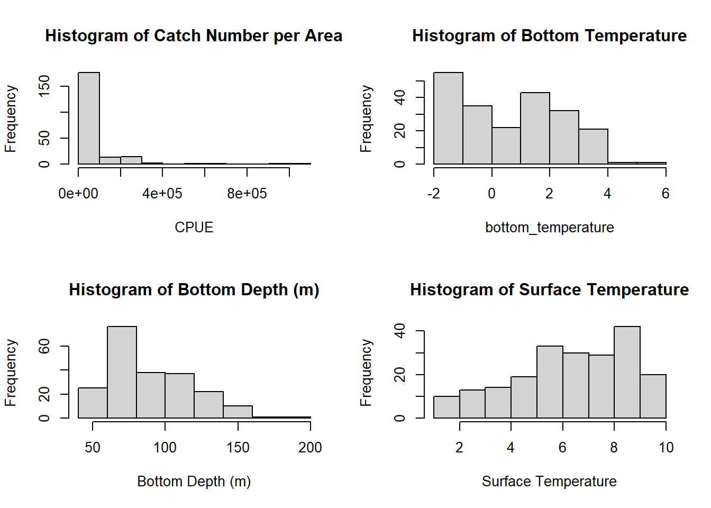
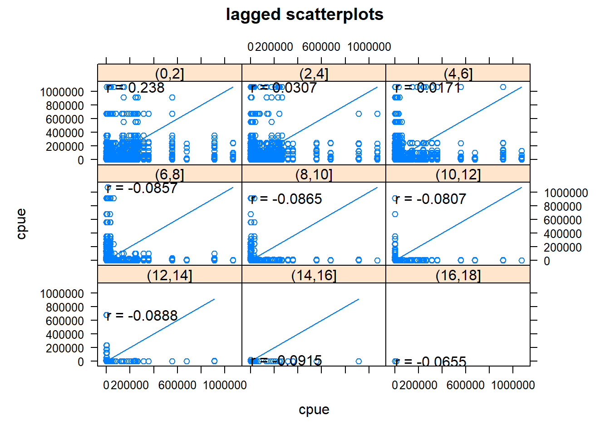
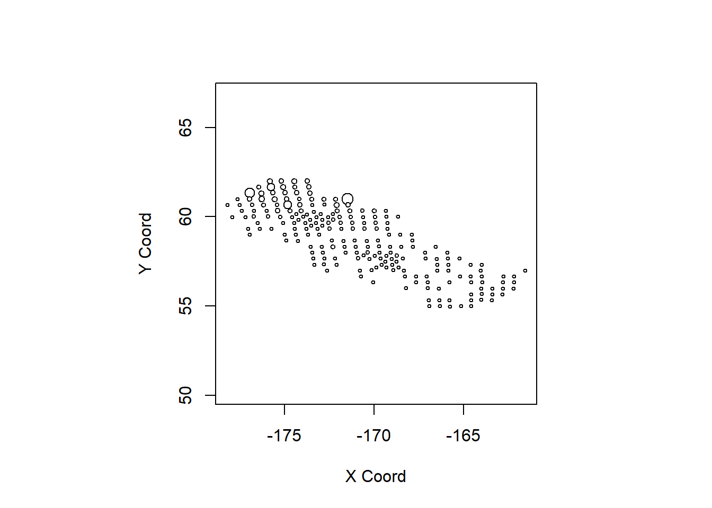
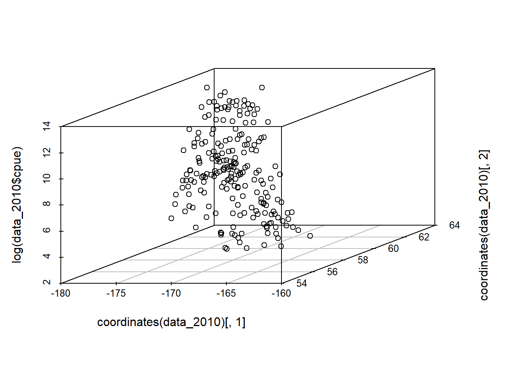
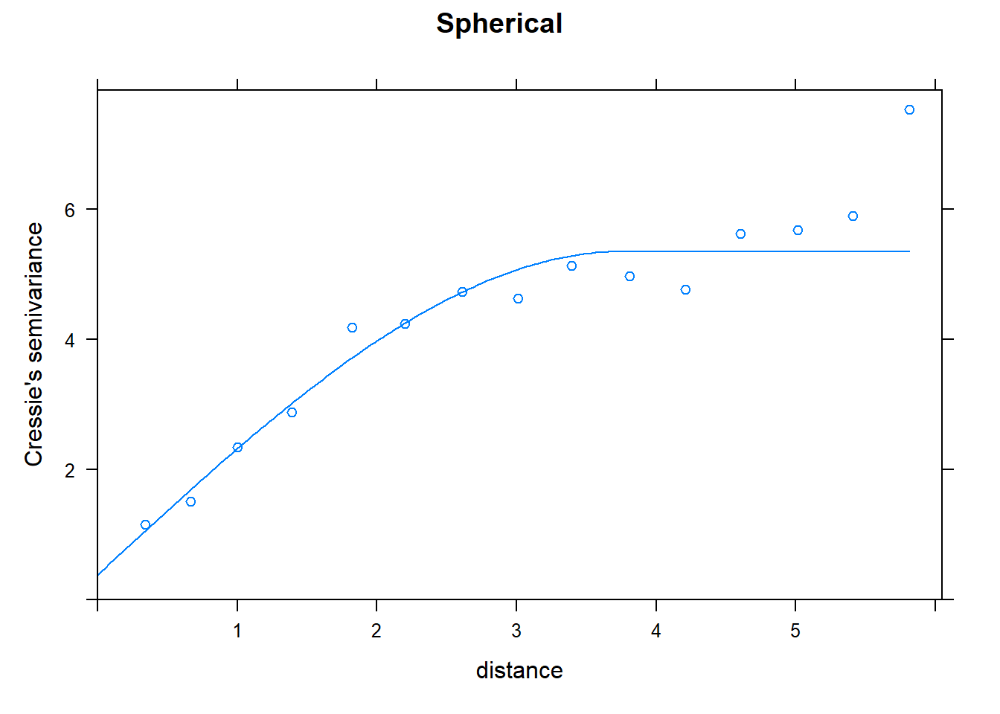
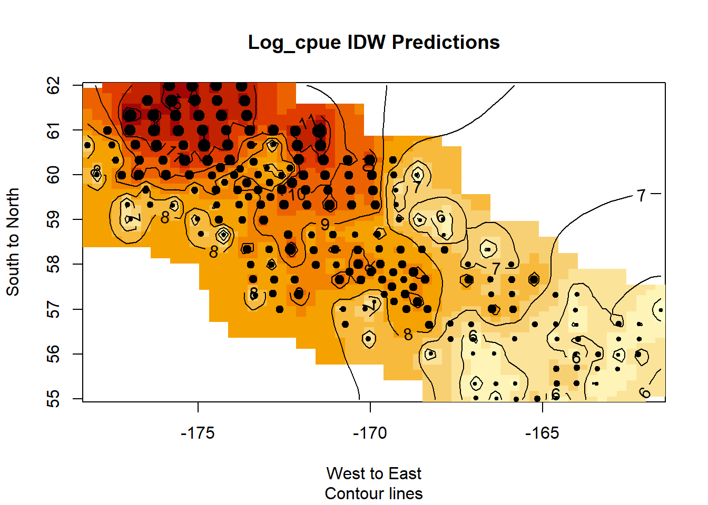
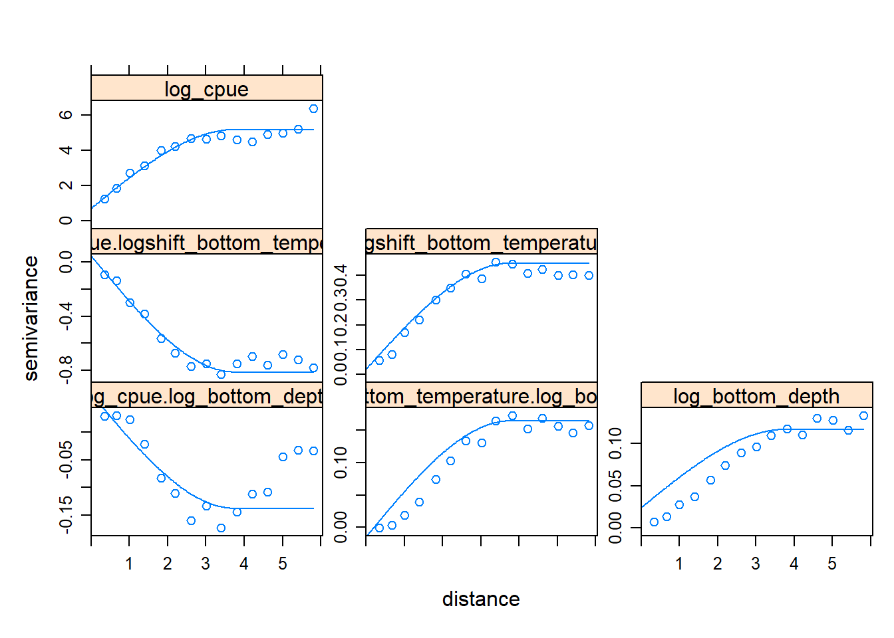
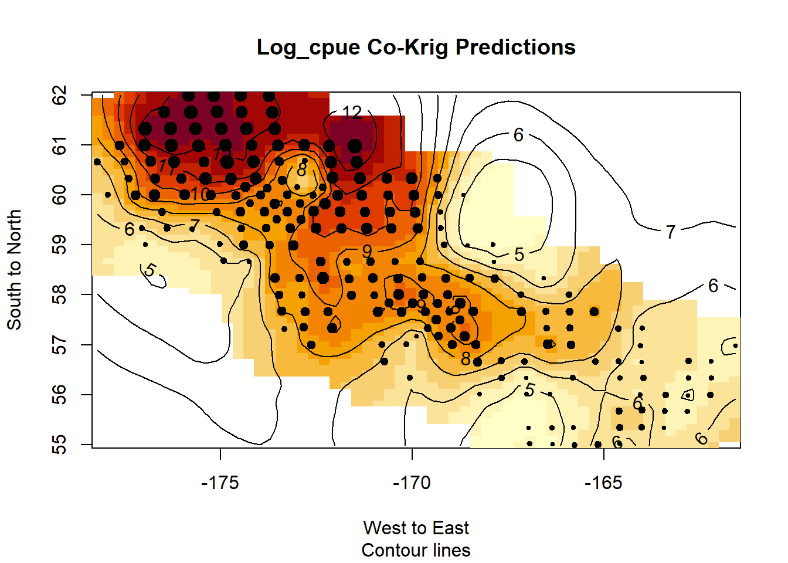

#libraries
library(tidyverse)
library(knitr)
library(rgl)
library(geoR)
library(gstat)
library(sp)
library(stats)
library(scatterplot3d)
library(lattice)
library(gridExtra)
#dataset
data <- read_csv("media2/mfsnowcrab.csv")Geospatial Predictions on Best Snow Crab Harvesting Grounds
I used geo-statistical packages geoR and gstat to predict where Alaskan Snow Crab would be most dense based of the data spatial data gathered from the year 2010.
I used the Snow Crab Geospatial Data (1975-2018) dataset posted by Matt Op on kaggle. This has already been data cleaned.
Importing Necessary Libraries and Dataset
Description of Dataset:
The description of the dataset variables is as follows:
- Latitude: The latitude (decimal degrees) at the start of the haul.
- Longitude: The longitude (decimal degrees) at the start of the haul.
- Year: Year specimen was collected.
- Name: The common name of the marine organism associated with the scientific name.
- Sex: Gender of crab.
- Bottom Depth: Meters (m). Weighted average depth (m) and is calculated by adding gear depth to net height.
- Surface Temperature: Surface temperature, in tenths of a degree, Celsius.
- Bottom Temperature: Average temperature (in tenths of a degree Celsius) measured at the maximum depth of the trawl.
- Haul: This number uniquely identifies a haul within a cruise. It is a sequential number, in chronological order of occurrence.
- CPUE: Catch number per area the net swept in number/square nautical mile.
We will use CPUE as the attribute to predict.
Basic EDA
#dimensions
dim(data)[1] 17927 11#summary
summary(data) id latitude longitude year
Min. :145878 Min. :54.67 Min. :-178.2 Min. :1975
1st Qu.:158286 1st Qu.:57.17 1st Qu.:-173.6 1st Qu.:1988
Median :163807 Median :58.34 Median :-170.9 Median :1998
Mean :162675 Mean :58.53 Mean :-170.7 Mean :1998
3rd Qu.:168611 3rd Qu.:59.99 3rd Qu.:-167.9 3rd Qu.:2008
Max. :173422 Max. :62.04 Max. :-158.4 Max. :2018
name sex bottom_depth surface_temperature
Length:17927 Length:17927 Min. : 22.00 Min. :-1.100
Class :character Class :character 1st Qu.: 68.00 1st Qu.: 5.900
Mode :character Mode :character Median : 84.00 Median : 7.300
Mean : 90.01 Mean : 7.124
3rd Qu.:110.00 3rd Qu.: 8.600
Max. :276.00 Max. :14.100
bottom_temperature haul cpue
Min. :-2.100 Min. : 1.0 Min. : 52
1st Qu.: 0.600 1st Qu.: 86.0 1st Qu.: 483
Median : 2.000 Median :127.0 Median : 3215
Mean : 1.802 Mean :123.8 Mean : 32876
3rd Qu.: 3.200 3rd Qu.:164.0 3rd Qu.: 21008
Max. :10.000 Max. :334.0 Max. :5117962 There are 17927 observations with 11 columns. The variables all look to be in the same class.
Filtering the dataset to just 2010
We want to use only the 2010 data since it has the most observations. We also need to make sure the observation do not have duplicate haul numbers as the geospatial prediction method of kriging we use later does not allow for data that stems from the same location / observation.
#checking observation counts per year with no duplicate hauls
data %>%
distinct(haul, .keep_all = TRUE) %>%
group_by(year) %>%
summarise(count = n()) %>%
arrange(desc(count))
#filtering the data to only 2010 with unique data points only
data_2010 <- data %>%
filter(year == 2010) %>% # Keep only 2010 data
group_by(haul) %>%
mutate(count = n()) %>% # Count occurrences of each haul
filter(count == 1 | row_number() == 1) %>% # Keep unique hauls + first instance of duplicates
ungroup() %>%
select(-count) # Remove count column
#check for duplicates
duplicates <- data_2010$haul[duplicated(data_2010$haul)]
unique(duplicates) # Shows unique haul numbers that are duplicated
#check for nas
colSums(is.na(data_2010))There are no NA’s. There are also no duplicates.
Looking at data_2010:
#dimensions
dim(data_2010)[1] 210 11#summary
summary(data_2010) id latitude longitude year
Min. :159664 Min. :54.99 Min. :-178.2 Min. :2010
1st Qu.:161313 1st Qu.:57.33 1st Qu.:-173.8 1st Qu.:2010
Median :162314 Median :58.68 Median :-171.2 Median :2010
Mean :162649 Mean :58.66 Mean :-170.8 Mean :2010
3rd Qu.:163791 3rd Qu.:60.01 3rd Qu.:-168.0 3rd Qu.:2010
Max. :166371 Max. :62.00 Max. :-161.6 Max. :2010
name sex bottom_depth surface_temperature
Length:210 Length:210 Min. : 40.00 Min. :1.00
Class :character Class :character 1st Qu.: 68.00 1st Qu.:5.00
Mode :character Mode :character Median : 83.00 Median :6.55
Mean : 89.62 Mean :6.32
3rd Qu.:108.75 3rd Qu.:8.40
Max. :192.00 Max. :9.70
bottom_temperature haul cpue
Min. :-1.6000 Min. : 16.00 Min. : 52.0
1st Qu.:-1.0000 1st Qu.: 86.25 1st Qu.: 677.2
Median : 0.6000 Median :139.50 Median : 5316.5
Mean : 0.7481 Mean :137.79 Mean : 51539.8
3rd Qu.: 2.1000 3rd Qu.:192.50 3rd Qu.: 28748.8
Max. : 5.1000 Max. :245.00 Max. :1070004.0 210 observations. Nice!
Histograms, ECDF, Scatterplot, Correlation Matrix
Correlation Matrix
#correlation matrix
cor_matrix <- cor(scale(data_2010[sapply(data_2010, is.numeric)]))
high_corr_indices <- which(abs(cor_matrix) > 0.7, arr.ind = TRUE)
# Extract the names of the variables involved in the high correlations
high_corr_pairs <- data.frame(
var1 = rownames(cor_matrix)[high_corr_indices[, 1]],
var2 = colnames(cor_matrix)[high_corr_indices[, 2]],
correlation = cor_matrix[high_corr_indices]
)
#response correlations
cor_cpue <- cor_matrix["cpue", ]
#which are the largest one
sort(abs(cor_cpue), decreasing = TRUE) cpue latitude haul surface_temperature
1.00000000 0.48166915 0.42204061 0.36076845
longitude id bottom_temperature bottom_depth
0.32925130 0.27546297 0.21331928 0.02460697 I want to use bottom_temperature, bottom_depth, surface_temperature as predictors for the method of co-kriging later as this method requires strongly correlated variables.
Histograms
par(mfrow = c(2,2))
#histograms
hist(data_2010$cpue,
main = "Histogram of Catch Number per Area",
xlab = "CPUE")
hist(data_2010$bottom_temperature,
main = "Histogram of Bottom Temperature",
xlab = "bottom_temperature")
hist(data_2010$bottom_depth,
main = "Histogram of Bottom Depth (m)",
xlab = "Bottom Depth (m)")
hist(data_2010$surface_temperature,
main = "Histogram of Surface Temperature",
xlab = "Surface Temperature")
Looks pretty normal except for the CPUE, this one is skewed right. Let’s test normality for all though.
Tests for Normality
shapiro.test(data_2010$cpue)
Shapiro-Wilk normality test
data: data_2010$cpue
W = 0.43008, p-value < 2.2e-16shapiro.test(data_2010$bottom_temperature)
Shapiro-Wilk normality test
data: data_2010$bottom_temperature
W = 0.92708, p-value = 1.051e-08shapiro.test(data_2010$bottom_depth)
Shapiro-Wilk normality test
data: data_2010$bottom_depth
W = 0.95349, p-value = 2.487e-06shapiro.test(data_2010$surface_temperature)
Shapiro-Wilk normality test
data: data_2010$surface_temperature
W = 0.94799, p-value = 7.044e-07Since the p-value is less than 0.05 for all of them, none of them are normal. I should probably log transform the variables later when doing analysis.
h-scatterplot
#hscatterplot
# Produces h-scatterplots, where point pairs having specific separation distances are plotted
# first argument is the formula / variable used
# second is the data set
# third is the breaks in the data we are detecting in this case 0 to 1 by 0.1
coordinates(data_2010) <- ~longitude+latitude
dist_mat <- dist(coordinates(data_2010))
#max distance
dist_max <- max(dist_mat)
qq <- hscat(cpue~1, data_2010, seq(0, 20, by = 2))
plot(qq, main="h-scatterplots")
This is a lagged scatterplot matrix that shows the relationship between “cpue” (catch per unit effort) at different distance lags. Each panel represents a scatterplot of cpue values at different lag intervals, and the correlation coefficient is shown for each panel. Since the first panel has the strongest correlation of 0.238 we can conclude that cpue values at nearby locations tend to be somewhat similar and as distance increases this correlation decreases.
Bubble Plot
#bubble plot
response <- as.data.frame(cbind(coordinates(data_2010), data_2010$cpue))
bubble <- as.geodata(response)
points(bubble)
This bubble plot shows the locations of all the observations and their outcome variable magnitudes. The bigger the circle the bigger the cpue variable.
Generating an Emperical Semivariogram for Kriging.
Here we generate an emperical semivariogram. A semivariogram is a tool used in geostatistics to measure how similar (or different) data points are based on the distance between them. It helps us understand spatial patterns in data, such as whether nearby locations have similar values or if there is a predictable structure across space. The x-axis is the distance lag between points. The y-axis is semivariance which is how different the points tend to be. This is calculated by taking the difference in values and squaring them.
We need this because prediction using kriging relies on the idea that nearby locations have similar values, and the semivariogram quantifies this relationship by showing how variance (difference) increases with distance. Later using this model we make, kriging will assign weights to data points based on their distances and this semivariogram model.
#log transform since skewed
#locations already set
c_stat <- gstat(id="log(cpue)", formula = log(cpue)~1,
data = data_2010)
#calc / plot variogram
#classical
var1 <- variogram(c_stat)
p1 <- plot(var1, main = "Emperical Semi-Variogram Classic")
#robust
var2 <- variogram(c_stat, cressie = TRUE)
p2 <- plot(var2, main = "Emperical Semi-Variogram Robust")
# 4 dir
var_dir <- variogram(c_stat, alpha=c(0,45,90,135))
p3 <- plot(var_dir)
#3d scatterplot
p4 <- scatterplot3d(coordinates(data_2010)[,1], coordinates(data_2010)[,2],
log(data_2010$cpue))
#another look
# plot3d(coordinates(data_2010)[,1], coordinates(data_2010)[,2],
# log(data_2010$cpue))
#looks fine
#Crossvalidation for 3 models Classical
#Fitting Gaussian Model
g.fit <- fit.variogram(var1, vgm(1,"Gau",3,7))
p5 <- plot(var1, g.fit, main = "Gaussian")
cv_gau <- krige.cv(log(cpue)~1, data_2010,
model = g.fit, nfold = nrow(data_2010))
#Fitting Exponential Model
e.fit <- fit.variogram(var1, vgm(1,"Exp",3,7))
p6 <- plot(var1, e.fit, main = "Exponential")
cv_exp <- krige.cv(log(cpue)~1, data_2010,
model = e.fit, nfold = nrow(data_2010))
#Fitting Spherical Model
s.fit <- fit.variogram(var1, vgm(1,"Sph",3,7))
p7 <- plot(var1, s.fit, main = "Spherical")
cv_sph <- krige.cv(log(cpue)~1, data_2010,
model = s.fit, nfold = nrow(data_2010))
#press comparison
press_gau <- sum(cv_gau$residual^2) / nrow(data_2010)
press_exp <- sum(cv_exp$residual^2) / nrow(data_2010)
press_sph <- sum(cv_sph$residual^2) / nrow(data_2010)
c(press_gau, press_exp, press_sph)[1] 1.449019 1.471420 1.448176#Crossvalidation for 3 models Robust
#Fitting Gaussian Model
g.fit2 <- fit.variogram(var2, vgm(1,"Gau",3,7))
p8 <- plot(var2, g.fit2, main = "Gaussian")
cv_gau2 <- krige.cv(log(cpue)~1, data_2010,
model = g.fit2, nfold = nrow(data_2010))
#Fitting Exponential Model
e.fit2 <- fit.variogram(var2, vgm(1,"Exp",3,7))
p9 <- plot(var2, e.fit2, main = "Exponential")
cv_exp2 <- krige.cv(log(cpue)~1, data_2010,
model = e.fit2, nfold = nrow(data_2010))
#Fitting Spherical Model
s.fit2 <- fit.variogram(var2, vgm(1,"Sph",3,7))
p10 <- plot(var2, s.fit2, main = "Spherical")
cv_sph2 <- krige.cv(log(cpue)~1, data_2010,
model = s.fit2, nfold = nrow(data_2010))
#press comparison
press_gau2 <- sum(cv_gau2$residual^2) / nrow(data_2010)
press_exp2 <- sum(cv_exp2$residual^2) / nrow(data_2010)
press_sph2 <- sum(cv_sph2$residual^2) / nrow(data_2010)
c(press_gau2, press_exp2, press_sph2)[1] 1.462165 1.446201 1.417918#only plot the best one
p10
First, I plot the sample variogram given the dataset. We first make a gstat object that log transforms the cpue variable. We then plot the variogram, which can be further adjusted using classical or robust estimators to improve the next step of model fit. We then need to fit a variogram model to this plot so that we can make predictions in kriging later. I use two types of sample variograms and three type of variogram models here and cross-validate to find that the spherical variogram function fit on the sample variogram using robust estimators minimizes the prediction squared error. Notice that we have a 3D scatterplot of the data. This is used to identify spatial trends in the data to see if data detrending is required to meet the requirements of ordinary kriging which is a constant mean. Luckily there is no trend.
Inverse Distance Interpolation Predictions
We first try Inverse Distance Interpolation Prediction.
#making grid
x_val <- seq(min(coordinates(data_2010)[,1]), max(coordinates(data_2010)[,1]),
length.out = 60)
y_val <- seq(min(coordinates(data_2010)[,2]), max(coordinates(data_2010)[,2]),
length.out = 60)
grid <- expand.grid(longitude = x_val, latitude = y_val)
coordinates(grid) <- ~longitude+latitude
#plot grid and obs
# plot(grid)
# points(data_2010)
#idw pred
idw.out <- idw(log(cpue)~1, data_2010, grid)#collapse prediction to matrix
qqq <- matrix(idw.out$var1.pred, length(x_val), length(y_val))
#removing NAs
#edited it based off the name of coordinate columns
mask <- function(predictions, pts, grid.x, grid.y, win.size) {
new.qqq <- predictions
m <- nrow(predictions)
n <- ncol(predictions)
for (i in 1:m) {
for (j in 1:n) {
x.min <- i-win.size
y.min <- j-win.size
x.max <- i+win.size
y.max <- j+win.size
if (x.min < 1) { x.min <- 1 }; if (y.min < 1) { y.min <- 1 }
if (x.max > length(grid.x)) { x.max <- length(grid.x) };
if (y.max > length(grid.y)) { y.max <- length(grid.y) }
candidates <- pts[which(pts$longitude >= grid.x[x.min]
& pts$longitude <= grid.x[x.max]),]
thePoints <- candidates[which(candidates$latitude >= grid.y[y.min]
& candidates$latitude <= grid.y[y.max]),]
if (nrow(thePoints) == 0) {
new.qqq[i,j] <- NA
}
}
}
return(new.qqq)
}
d <- mask(qqq, data_2010, x_val, y_val, 5)
#rastermap
image(x_val, y_val, d, xlab="West to East", ylab="South to North")
#Bubble plot:
points(data_2010, cex=log(data_2010$cpue) / mean(log(data_2010$cpue)), pch=19)
#Add contours:
contour(x_val, y_val, qqq, add=TRUE, col="black", labcex=1)
title(main="Log_cpue IDW Predictions", sub = "Contour lines")
Inverse Distance Interpolation predicting is a method used to estimate values at unknown locations based on nearby known values. It assumes that closer points have more influence on the predicted value than farther points.
The mask function is implemented to remove all areas on the raster map outside of the sample domain as all spatial prediction is interpolation, as in you can only make predictions within the given domain of points.
Predictions using Kriging:
We now use kriging to make predictions. Kriging is an advanced geostatistical interpolation method used to predict unknown values at specific locations based on known data points. Unlike Inverse Distance Weighting (IDW), kriging considers both distance and spatial correlation (trends and patterns in data), making it more accurate for many applications.
We use different types of kriging below: - Ordinary Kriging: assumes a constant but unknown mean - Universal Kriging: assumes a non-constant and unknown mean, or trended data - Co-Kriging: uses correlated variables to help contribute to main variable predictions
#we will just use ordinary, universal, and cokriging
#ordinary kriging
ok <- krige(id="log_cpue", log(cpue)~1, model=s.fit2, data_2010,
newdata=grid) [using ordinary kriging]#universal is just assuming trend (make sure grid and gstat obj col same)
uk <- krige(id="log_cpue", log(cpue)~longitude+latitude, model=s.fit2,
data_2010, newdata=grid)[using universal kriging]#cokriging
#setup
#co-kriging use bottom temp and surface temp since they are the most correlated
g1 <- gstat(id="log_cpue", formula = log(cpue)~1, data = data_2010)
# Append transformed bottom_temp, depth, and surface_temp
# shifting the negative values in bottom temp
min_value <- min(data_2010$bottom_temperature, na.rm = TRUE)
g1 <- gstat(g1, id="logshift_bottom_temperature",
formula = log(bottom_temperature - min_value + 1)~1,
data = data_2010)
g1 <- gstat(g1, id="log_bottom_depth", formula = log(bottom_depth)~1,
data = data_2010)
# g1 <- gstat(g1, id="log_surface_temperature",
# formula = log(surface_temperature)~1, data = data_2010)
#variogram co krig, (can you detrend cokriging predictors? ask)
var_co <- variogram(g1)
p11 <- plot(var_co, main = "Emperical Semivariogram Co-Krig")
vm_fit <- fit.lmc(var_co, g1, model=s.fit2)
plot(var_co, vm_fit)
I ended up having to use just the log transformed bottom temperature and bottom depth variables for co-kriging as the cross validation function was unable to converge when using all three. We cross validate co-kriging, ordinary kriging, and universal kriging below.
Cross Validation
#ordinary kriging
cv_ok <- krige.cv(log(cpue)~1, data_2010, model=s.fit2,
nfold=nrow(data_2010))
press_ok <- sum(cv_ok$residual^2) / nrow(data_2010)
#universal cv
cv_uk <- krige.cv(log(cpue)~longitude+latitude, data_2010, model=s.fit2,
nfold=nrow(data_2010))
press_uk <- sum(cv_ok$residual^2) / nrow(data_2010)
#cokriging cv
cv_ck <- gstat.cv(vm_fit, verbose = FALSE)
press_ck <- sum(cv_ck$residual^2) / nrow(data_2010)c(press_ok, press_uk, press_ck)[1] 1.417918 1.417918 1.282675Co-kriging is the best at minimizing prediction squared error out of the three we tested so we will make predictions using it.
Predictions for Co-Kriging
#Cokriging predictions:
ck <- predict(vm_fit, grid, verbose = FALSE)
#collapse
pred_mat <- matrix(ck$log_cpue.pred, length(x_val), length(y_val))We leave the predictions in matrix form then plot it.
Raster Map from Co-Kriging
#use interpolating insurer from earlier
d2 <- mask(pred_mat, data_2010, x_val, y_val, 5)
#Raster
image(x_val, y_val, d2, xlab="West to East", ylab="South to North")
#Bubble plot:
points(data_2010, cex=log(data_2010$cpue) / mean(log(data_2010$cpue)), pch=19)
#Add contours:
contour(x_val, y_val, pred_mat, add=TRUE, col="black", labcex=1)
title(main="Log_cpue Co-Krig Predictions", sub = "Contour lines")
Similarly, we mask points that are outside the domain of the dataset. This raster map shows the locations where Alaskan Snow Crab concentrations would theoretically be highest!